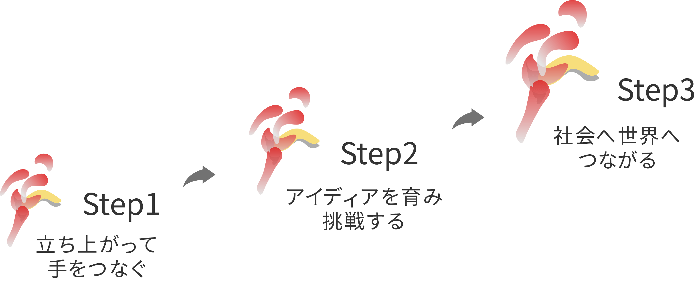

チェンジメーカーをめざして
。千葉市幕張の神田外語大学（KUIS）4号館207号室―― 「和田ゼミ起業研究会」はここで誕生した。和田純教授とともに、グローバルな文脈で起業や市民社会の可能性を問い、持続的な社会参画や社会変革のあり方を論議するなかから「社会の役に立ちたい」「大学を活性化させたい」「地域や世界とつながり貢献したい」という想いが結実した。

想いは に「和田ゼミ社会起業研究会」へと姿を変え、5つの社会貢献プロジェクトを育んでいくことになる。めざしたのは、自らがチェンジメーカー、社会変革の担い手になること。心に刻んだのは、最初の半歩を踏み出す勇気の大切さと小さな半歩も大きな一歩につながっていくという確信。
その「和田ゼミ社会起業研究会」は、春でいったん幕を下ろすことになった。和田教授の定年退職に伴う転機である。そこで、あらためて、その17年に及ぶ軌跡を振り返り、250人に迫る仲間たちが積み重ねてきた「半歩」の跡を刻んでおきたい。次なる「一歩」を踏み出すために。
誰もがチェンジメーカーになれる。だから、これからも歩み続ける。
そして、ともに歩もう。
新たなStepをめざして。
誰もがチェンジメーカーになれる。だから、これからも歩み続ける。そして、ともに歩もう。新たなStepをめざして。